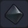 |
마그네 광석 | 금속을 밀거나 당기는 힘을 지닌 돌 | 마그네 광석을 포함한 블록을 파괴 어둑어둑섬 |
／ |
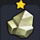 |
오리할콘 | 황금빛으로 빛나는 전설의 금속 | 오리할콘을 포함한 블록을 파괴 어둑어둑섬 |
／ |
| 블루 메탈 | 푸르고 투명한 아름다운 광석 | 블루 메탈을 포함한 블록을 파괴 번쩍번쩍섬 |
／ | |
| 붉은 보석 | 불타는 듯한 새빨간 보석 | 붉은 보석을 포함한 블록을 파괴 첨벙첨벙섬 |
／ | |
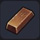 |
동괴 | 구리 여러 개를 가공해서 막대 모양으로 만든 것 | 구리 3 석탄 1 | 화로 |
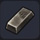 |
철괴 | 철 여러 개를 가공해서 막대 모양으로 만든 것 | 철 3 석탄 1 | 화로 |
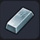 |
은괴 | 은 여러 개를 가공해서 막대 모양으로 만든 것 | 은 3 석탄 1 | 화로 |
| 금괴 | 금 여러 개를 가공해서 막대 모양으로 만든 것 | 금 1 석탄 1 | 화로 | |
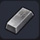 |
강철괴 | 철괴를 재가공해서 강화한 것 | 철괴 2 석탄 1 | 화로 |
| 시도늄 | 파괴신의 허물을 연성해서 만든 신비한 금속 | 무한 사용 목록：으스스섬 | 금단의 연성대 | |
| 기름 | 불이 잘 붙는 매끈한 액체 | 슬라임이 드롭 무한 사용 목록：어둑어둑섬 |
／ | |
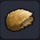 |
모피 | 뻣뻣한 마물의 모피 | 쥐, 리칸트 종류가 드롭 | ／ |
| 광란의 발톱 | 마음을 어지럽히는 성분이 함유된 커다란 발톱 | 리칸트 마믈이 드롭(꽁꽁섬) | ／ | |
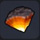 |
폭탄 돌 | 터진 폭탄바위의 몸체 일부 | 폭탄바위가 드롭 | ／ |
| 메탈 젤리 | 금속 성분을 함유한 끈적끈적한 액체 | 메탈 슬라임이 드롭 | ／ | |
| 용의 비늘 | 드래곤에게서 얻은 강인한 비늘 | 드래곤 계열 마물이 드롭 | ／ | |
| 흰색 염료 | 아이템과 가구를 흰색으로 물들일 수 있는 액체 | 뒹굴뒹굴섬 | 염료통 | |
| 검은색 염료 | 아이템과 가구를 검은색으로 물들일 수 있는 액체 | 출렁출렁섬 | 염료통 | |
| 보라색 염료 | 아이템과 가구를 보라색으로 물들일 수 있는 액체 | 출렁출렁섬 | 염료통 | |
| 분홍색 염료 | 아이템과 가구를 분홍색으로 물들일 수 있는 액체 | 꽁꽁섬 | 염료통 | |
| 빨간색 염료 | 아이템과 가구를 빨간색으로 물들일 수 있는 액체 | 번쩍번쩍섬 | 염료통 | |
| 초록색 염료 | 아이템과 가구를 초록색으로 물들일 수 있는 액체 | 번쩍번쩍섬 | 염료통 | |
| 노란색 염료 | 아이템과 가구를 노란색으로 물들일 수 있는 액체 | 꽁꽁섬 | 염료통 | |
| 파란색 염료 | 아이템과 가구를 파란색으로 물들일 수 있는 액체 | 뒹굴뒹굴섬 | 염료통 | |
| 신비한 씨앗 | 차코가 건네준 신비한 열매 ■ 빛나는 받침대에 심어 보면...? |
스토리진행 | ／ | |
| 피리의 조각(우) | 메아리 피리의 오른쪽 절반 ■ 필요할 때 사용하자! |
스토리진행 | ／ | |
| 피리의 조각(좌) | 메아리 피리의 왼쪽 절반 ■ 필요할 때 사용하자! |
스토리진행 | ／ | |
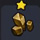 |
낡은 광석 | 낡긴 했지만 신비한 힘이 느껴지는 광석 ■ 필요할 때 사용하자! |
스토리진행 | ／ |
| 거울 장갑 | 빛나는 금속을 가공해서 보석을 박아 넣은 장갑 | 스토리진행 | ／ | |
| 마법의 보온돌 | 마법의 힘으로 주위를 따스하게 데우는 신비한 돌 | 스토리진행 | ／ | |
| 천둥의 돌 | 눈부신 빛을 내뿜는 신성한 돌 ※ 출렁출렁섬의 아크 데몬이 드롭 ※ 문부르크섬의 문페타 부서진 교회 작은 방 |
마물에서 드롭 보물 상자 |
／ | |
| 바람을 가르는 깃털 | 바람을 잠재우는 힘이 깃든 깃털 ※ 꽁꽁섬의 스타 키메라가 드롭 |
마물에서 드롭 | ／ | |
| 천년빙의 결정 | 몹시 추운 지역의 깊숙한 땅속에 잠들어 있던 귀중한 휘석 ※ 출렁출렁섬의 실버 데빌이 드롭 ※ 문부르크섬: 눈보라 지대에 출현하는 블리자드 |
마물에서 드롭 | ／ | |
| 빌더의 영혼 | 빌더 벨을 만들 때 필요한 소재 | 스토리진행 | ／ | |
| 시작의 잎 | 히바방고가 떨어뜨린 신비한 힘을 지닌 잎사귀 | 스토리진행 | ／ | |
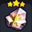 |
시작의 황금 | 메두사 볼이 떨어뜨린 눈부신 황금 | 스토리진행 | ／ |
| 시작의 문장 | 아틀라스가 떨어뜨린 녹슨 문장 | 스토리진행 | ／ | |
| 바람의 물방울 | 시작의 잎과 야채로 만든 물방울 | 스토리진행 | ／ | |
| 황금의 광채 | 시작의 황금이 뿜은 마력의 빛 | 스토리진행 | ／ | |
| 왕가의 문장 | 문부르크 왕가의 문장 | 스토리진행 | ／ | |
| 머신 하트G | 킬러G가 준 생명의 힘이 깃든 결정 | 스토리진행 | ／ | |
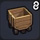 |
나무 광차 | 나무로 만들어진 간단한 차 ■ 선로 위를 이동할 수 있다 |
목재 3 | 텅 빈 섬 작업대 |
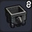 |
철 광차 - 앞 | 철로 만들어진 간단한 차 ■ 선로 위를 이동할 수 있다 |
철괴 3 | 텅 빈 섬 작업대 |
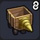 |
드릴 광차 | 드릴을 단 나무 광차 ■ 선로 위를 이동하며 꽤 단단한 것을 부술 수 있다 |
나무 광차 1 철괴 2 동괴 3 |
텅 빈 섬 작업대 |
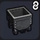 |
철 광차 | 철 광차 뒷 차량 ■ 선로 위를 이동할 수 있다 |
철괴 2 동괴 1 |
텅 빈 섬 작업대 |
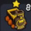 |
광차 트레인 - 앞 | 선로를 질주하는 스릴 넘치는 탈것의 선두 차량 ■ 선로 위를 이동할 수 있다 ※ 텅 빈 섬에서 불꽃놀이를 촬영하자 (잠금 해제) |
목재 1 동괴 2 철괴 1 |
텅 빈 섬 작업대 |
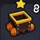 |
광차 트레인 | 선로를 질주하는 스릴 넘치는 탈 것 ■ 선로 위를 이동할 수 있다 ※텅 빈 섬에서 불꽃놀이를 촬영하자 (잠금 해제) |
목재 1 동괴 1 철괴 1 |
텅 빈 섬 작업대 |
| 선로 | 광차가 달릴 수 있는 레일 ■ 모서리에 두면 자동으로 모양 변화 |
철괴 5 목재 3 |
텅 빈 섬 작업대 | |
| 광차 정지판 | 광차의 종점이 되는 포인트 ■ 선로변에 두면 일단 광차가 정지한다 |
철괴 1 목재 1 |
텅 빈 섬 작업대 | |
| 마법의 구슬 | 터지는 돌의 힘으로 대폭발하는 쇠구슬 ■ 놓은 후 잠시 뒤에 대폭발 ※ 폭탄 바위를 쓰러뜨리자 (잠금 해제) |
폭탄 돌 3 철괴 1 실 1 |
텅 빈 섬 작업대 | |
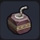 |
낡은 마법의 구슬 | 터지는 돌의 힘으로 폭발하는 낡은 쇠구슬 ■ 놓은 후 잠시 뒤에 대폭발 ※ 폭탄 바위를 쓰러뜨리자 (잠금 해제) |
폭탄 돌 2 철괴 1 실 1 |
텅 빈 섬 작업대 |
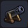 |
대포 | 철제 탄환을 쏘아내는 큰 포대 ■ 놓은 뒤 〇 버튼으로 탄환을 쏠 수 있다 |
철괴 5 목재 3 석탄 2 |
텅 빈 섬 작업대 |
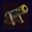 |
마법 대포 | 이오나즌 주문이 담긴 탄환을 쏘는 거대한 포대 ■ 놓은 뒤 〇 버튼으로 탄환을 쏠 수 있다 ※ 빌더 하트 50 교환 (잠금 해제) |
대포 1 마력의 수정 1 미스릴 2 |
마법의 작업대 |
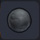 |
대포알 | 대포에서 발사되는 철 탄알 | 철괴 1 | 텅 빈 섬 작업대 |
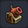 |
발사 대포 | 불꽃 등을 쏠 수 있는 포대(팔척구슬 이용) | 철괴 3 목재 3 실 3 |
텅 빈 섬 작업대 |
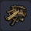 |
대궁 | 바닥에 고정해서 화살을 쏘는 기계장치 활 ■ 놓은 뒤 〇 버튼으로 화살을 발사할 수 있다 |
목재 3 실 2 철괴 1 | 텅 빈 섬 작업대 |
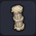 |
데인 배리어 | 마주보듯이 놓으면 배리어를 펼치는 병기 ■ 사이에 들어온 적을 튕겨낸다 |
천둥의 돌 1 돌 원기둥 2 마력의 수정 2 |
마법의 작업대 |
| 불을 뿜는 석상 | 불을 뿜는 마물을 본뜬 조각상 ■ 앞을 지나가면 불을 뿜는다 |
으스스섬의 대마신에서 드롭 오카무르섬 - 불꽃 성당에 여러개 있음 |
／ | |
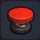 |
트램펄린 | 올라타면 폴짝폴짝 뛸 수 있다 ※ 빌더 하트 100 교환 (잠금 해제) |
목재 8 풀 실 6 실 6 | 텅 빈 섬 작업대 |
| 루란폴린 | 올라타면 폴짝폴짝 뛸 수 있다 ■ 오랜 타고 있으면 더 높이 뛸 수 있다 ※ 텅빈 섬에 트램펄린 10개 설치 (잠금 해제) |
트램펄린 1 마력의 결정 2 |
마법의 작업대 | |
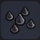 |
가시 덫 | 날카로운 가시가 돋힌 바닥 ■ 마물이 위를 지나가면 대미지를 입는다 |
철괴 3 | 텅 빈 섬 작업대 |
| 바리케이드 | 강철로 만들어진 마물 막이용 울타리 | 목재 2 강철괴 1 |
텅 빈 섬 작업대 | |
| 기라 타일 | 마물들의 침입을 불꽃의 힘으로 막는 병기 ■ 근처의 스위치에 반응해 불기둥을 쏘아올린다 |
성의 바닥 1 마력의 수정 2 |
마법의 작업대 | |
| 햐드 트랩 | 마물들의 침입을 얼음의 힘으로 막는 병기 ■ 스위치에 반응해 근처의 적을 얼린다 |
천년빙의 결정 1 바닥 스위치 1 마력의 수정 1 |
마법의 작업대 | |
| 바기 배큠 | 마물들의 침입을 바람의 힘으로 막는 병기 ■ 상공의 몬스터를 빨아들여 지면에 떨어뜨린다 |
바람을 가르는 깃털 3 화톳불 1 마력의 수정 1 |
마법의 작업대 | |
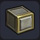 |
피스톤 | 뚜껑이 튀어나가는 큰 상자 ■ 마물 등을 튕겨 날려버린다 |
철괴 2 기름 1 |
텅 빈 섬 작업대 |
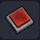 |
바닥 스위치 | 지면에 놓는 버튼 ■ 밟으면 근처의 장치가 작동한다 / 색 변경 가능 |
철괴 2 기름 1 |
텅 빈 섬 작업대 |
| 리모컨 스위치 | 지면에 놓는 버튼 ■ 밟으면 멀리 있는 장치가 작동한다 / 색 변경 가능 |
철괴 2 기름 1 |
텅 빈 섬 작업대 | |
| 벽 스위치 | 벽에 거는 버튼 ■ 누르면 근처의 장치가 작동한다 / 색 변경 가능 |
철괴 2 기름 1 |
텅 빈 섬 작업대 | |
| 리모컨 스위치 - 위 | 벽에 거는 버튼 ■ 누르면 멀리 있는 장치가 작동한다 / 색 변경 가능 |
철괴 2 기름 1 |
텅 빈 섬 작업대 | |
| 리모컨 스위치 - 아래 | 벽에 거는 버튼 ■ 누르면 멀리 있는 장치가 작동한다 / 색 변경 가능 |
철괴 2 기름 1 |
텅 빈 섬 작업대 | |
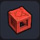 |
자석 블록 | 자성에 반응하는 바닥. 다양한 형태로 변화한다 ■ 가구 등의 아이템으로 위장 가능 ※ 텅 빈 섬 산정상 아래 숨겨진 방의 책 (잠금 해제) |
철괴 2 | 텅 빈 섬 작업대 |
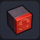 |
당김 자석 - 가로 | 끌어당기는 힘을 가진 자석 ■ 옆쪽에 있는 마그네틱 블록을 끌어당긴다 ※ 텅 빈 섬 산정상 아래 숨겨진 방의 책 (잠금 해제) |
마그네 광석 2 | 텅 빈 섬 작업대 |
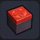 |
당김 자석 - 상 | 끌어당기는 힘을 가진 자석 ■ 위쪽에 있는 마그네틱 블록을 끌어당긴다 ※ 텅 빈 섬 산정상 아래 숨겨진 방의 책 (잠금 해제) |
마그네 광석 2 | 텅 빈 섬 작업대 |
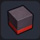 |
당김 자석 - 하 | 끌어당기는 힘을 가진 자석 ■ 아래쪽에 있는 마그네틱 블록을 끌어당긴다 ※ 텅 빈 섬 산정상 아래 숨겨진 방의 책 (잠금 해제) |
마그네 광석 2 | 텅 빈 섬 작업대 |
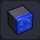 |
미는 자석 - 가로 | 밀어내는 힘을 가진 자석 ■ 옆쪽에 있는 마그네틱 블록을 밀어낸다 ※ 텅 빈 섬 산정상 아래 숨겨진 방의 책 (잠금 해제) |
마그네 광석 2 | 텅 빈 섬 작업대 |
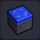 |
미는 자석 - 상 | 밀어내는 힘을 가진 자석 ■ 위쪽에 있는 마그네틱 블록을 밀어낸다 ※ 텅 빈 섬 산정상 아래 숨겨진 방의 책 (잠금 해제) |
마그네 광석 2 | 텅 빈 섬 작업대 |
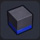 |
미는 자석 - 하 | 밀어내는 힘을 가진 자석 ■ 아래쪽에 있는 마그네틱 블록을 밀어낸다 ※ 텅 빈 섬 산정상 아래 숨겨진 방의 책 (잠금 해제) |
마그네 광석 2 | 텅 빈 섬 작업대 |
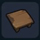 |
낡은 작업대 | 소소한 아이템 정도는 만들 수 있는 낡은 작업대 | 목재 3 | 텅 빈 섬 작업대 |
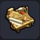 |
나무 작업대 | 까다롭게 고른 도구를 갖춘 작업용 책상 ■ 엄청나게 많은 도구를 만들 수 있다 |
목재 5 실 3 풀 실 2 밀 1 토마토 1 |
텅 빈 섬 작업대 |
| 철제 작업대 | 광석 가공에 특화된 도구를 갖춘 작업용 책상 ■ 엄청나게 많은 도구를 만들 수 있다 |
철괴 1 동괴 1 금괴 1 은괴 1 |
텅 빈 섬 작업대 | |
| 돌 작업대 | 엄선된 도구와 자료를 갖춘 작업용 책상 ■ 엄청나게 많은 도구를 만들 수 있다 |
석재 5 강철괴 3 마력의 수정 2 금괴 1 |
텅 빈 섬 작업대 | |
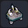 |
사교의 작업대 | 창조와 파괴를 반복하기 위한 작업대 ■ 각종 도구를 만들 수 있다 |
철괴 3 시도늄 3 꿰뚫어버리는 큰 뿔 1 |
텅 빈 섬 작업대 |
| 텅 빈 섬 작업대 | 육각형의 알록달록한 작업대 ■ 온갖 아이템을 만들 수 있다 |
목재 3 금괴 3 솜 3 대리석 3 커다란 비늘 3 |
텅 빈 섬 작업대 | |
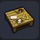 |
목공 작업대 | 나무 가공에 특화한 작업대 ■ 나무를 사용한 도구를 만들 수 있다 |
목재 12 | 텅 빈 섬 작업대 |
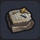 |
석공 작업대 | 돌 가공에 특화한 작업대 ■ 돌을 사용한 도구를 만들 수 있다 |
석재 12 | 텅 빈 섬 작업대 |
| 머신 메이커 | 간단한 기계를 만들 때 쓰는 도구 ■ 소형 기계로 도구 등을 만들 수 있다 |
철괴 8 마그네 광석 3 유리 1 |
텅 빈 섬 작업대 | |
| 초 머신 메이커 | 모든 작업을 자동으로 하는 대단한 도구 ■ 대형 기계로 도구 등을 만들 수 있다 |
철괴 8 동괴 3 목재 3 |
텅 빈 섬 작업대 | |
| 마법의 작업대 | 물건에 마법의 힘을 부여하는 신비한 작업대 ■ 마법 도구를 만들 수 있다 |
마력의 수정 3 석재 3 |
텅 빈 섬 작업대 | |
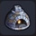 |
화로 | 내부를 고온으로 만들어 금속 등을 녹이는 도구 ■ 금속 주괴를 만들 수 있다 |
석재 8 | 텅 빈 섬 작업대 |